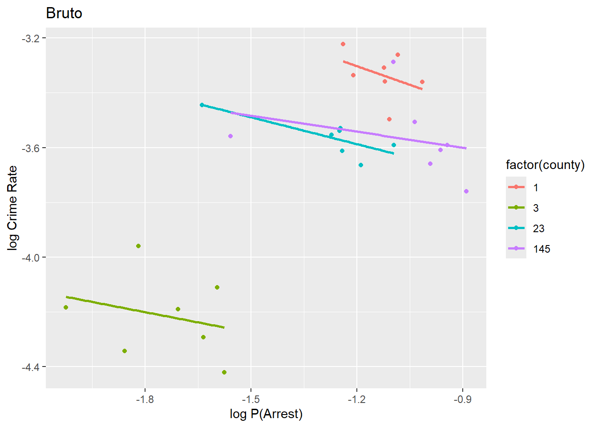
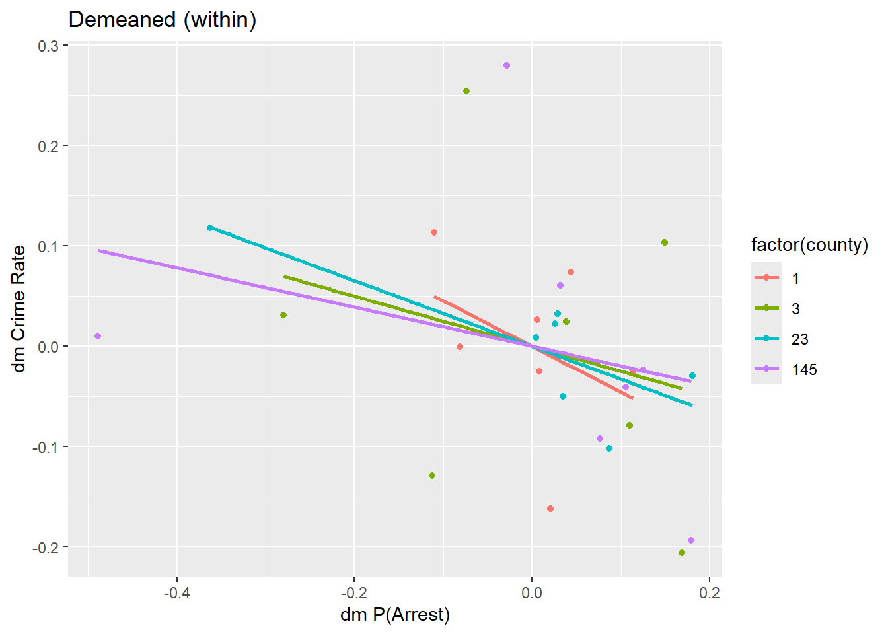
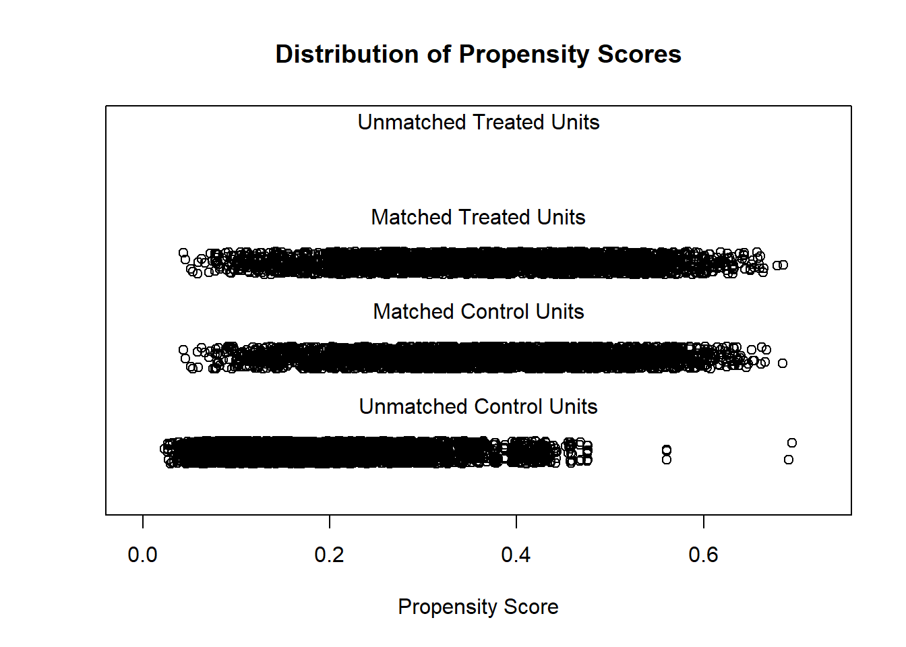
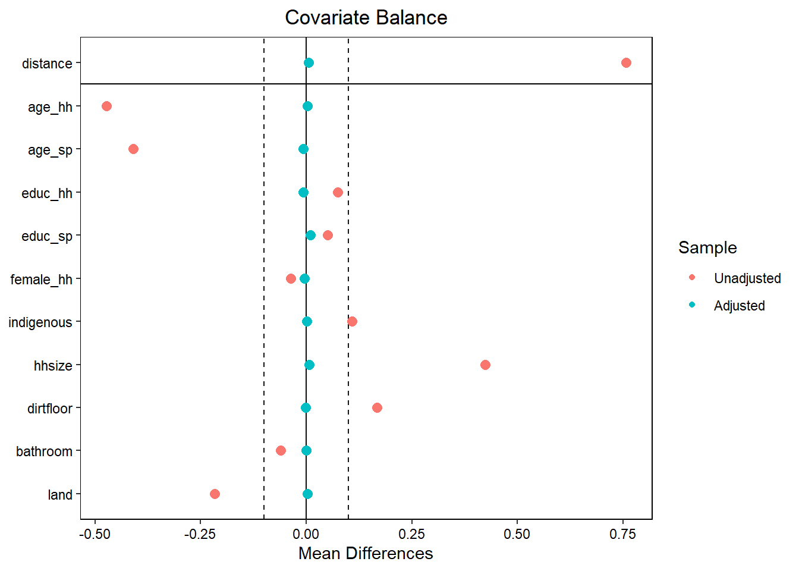
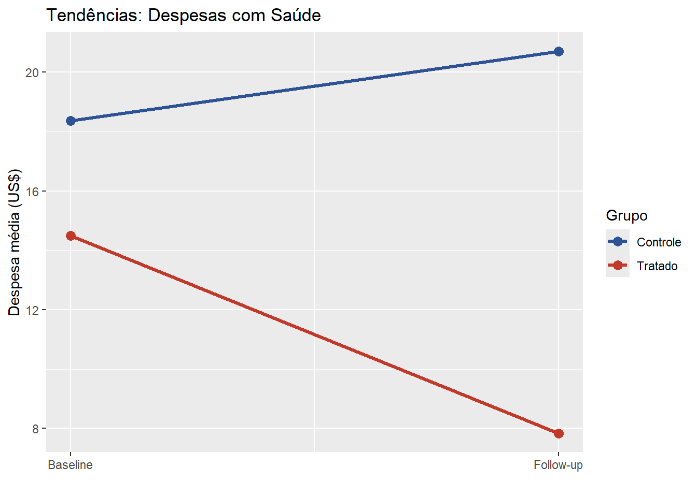

# Instalação de pacotes e bases
# install.packages(c("haven", "dplyr", "ggplot2", "fixest",
# "plm", "MatchIt", "cobalt", "lmtest",
# "sandwich", "modelsummary"))
library(haven); library(dplyr); library(ggplot2)
library(fixest) # pacote principal desta lista
library(plm) # apenas para RE e Hausman
library(MatchIt); library(cobalt)
library(lmtest); library(sandwich)
library(glue)
# Carregue as bases
painel <- read_dta('dados/base_painel.dta')
hisp <- read_dta('dados/Dados_HISP_MicroIV.dta')Resolução da lista 8
Curso de inferência causal
Parte I - Dados em Painel: modelo econômico do crime
1. Exploração dos dados e variação within/between
n <- glue("Tamanho da tabela: {nrow(painel)}")
cols <- glue("Colunas da tabela: {paste0(unlist(names(painel)), collapse=', ')}")
print(n)Tamanho da tabela: 630print(cols)Colunas da tabela: county, year, crmrte, prbarr, prbconv, prbpris, avgsen, polpc, density, west, central, urban, pctmin80, pctymle, wcon, wtuc, wtrd, wfir, wser, wmfg, wfed, wsta, wlocprbarr é a probabilidade de prisão (a variável independente) e crmrte é a taxa de criminalidade (a variável resposta).
painel %>%
summarise(N = n_distinct(county),
T = n_distinct(year),
obs = n())# A tibble: 1 × 3
N T obs
<int> <int> <int>
1 90 7 630O painel tem 90 indivíduos distintos ao longo de 7 anos, gerando 630 observações.
- As variações
betweensão as variações entre condados (indivíduos/unidades) e aswithinsão as variações ao longo do tempo dentro de um mesmo condado.
painel %>%
group_by(county) %>%
mutate(crmrte_bar = mean(crmrte),
prbarr_bar = mean(prbarr)) %>%
ungroup() %>%
summarise(
sd_total_crime = sd(crmrte),
sd_between_crime = sd(crmrte_bar),
sd_within_crime = sd(crmrte - crmrte_bar),
sd_total_arr = sd(prbarr),
sd_between_arr = sd(prbarr_bar),
sd_within_arr = sd(prbarr - prbarr_bar)
)# A tibble: 1 × 6
sd_total_crime sd_between_crime sd_within_crime sd_total_arr sd_between_arr
<dbl> <dbl> <dbl> <dbl> <dbl>
1 0.0181 0.0169 0.00652 0.171 0.135
# ℹ 1 more variable: sd_within_arr <dbl>A variável de probabilidade de prisão apresenta a maior variação within. Se a variação de uma variável for muito pequena, pode ser que não seja possível capturar nenhum efeito causal. Além disso, se a variação temporal de uma variável for nula, o modelo de efeitos fixos some com ela e não é possível estimar seu efeito.
# Variáveis em log e demeaned
painel <- painel %>%
mutate(
lcrmrte = log(crmrte), lprbarr = log(prbarr),
lprbconv = log(prbconv), lpolpc = log(polpc),
lpctymle = log(pctymle)
) %>%
group_by(county) %>%
mutate(
dm_lcrmrte = lcrmrte - mean(lcrmrte),
dm_lprbarr = lprbarr - mean(lprbarr)
) %>%
ungroup()
sel <- painel %>% filter(county %in% c(1, 3, 23, 145))
# Bruto
ggplot(sel, aes(lprbarr, lcrmrte, color=factor(county))) +
geom_point() +
geom_smooth(method="lm", se=FALSE) +
labs(title="Bruto", x="log P(Arrest)", y="log Crime Rate")
# Demeaned (within)
ggplot(sel, aes(dm_lprbarr, dm_lcrmrte, color=factor(county))) +
geom_point() +
geom_smooth(method="lm", se=FALSE) +
labs(title="Demeaned (within)", x="dm P(Arrest)", y="dm Crime Rate")
No gráfico com os dados brutos, cada condado tem um nível diferente de prisão e taxa de crime. Já no gráfico demeaned, todos se concentram em torno do zero. Isso mostra que as características inerentes de cada condado foram removidas e podemos olhar para o efeito da prisão sobre a taxa de crime.
2. POLS, efeito fixo e TWFE com fixest
- Regressão usando como controle a probabilidade de condenação (
lprbconv), a porcentagem de polícia per capta (lpolpc) e a porcentagem de homens jovens (lpctymle).
pols <- feols(lcrmrte ~ lprbarr + lprbconv + lpolpc + lpctymle,
data = painel)
summary(pols)OLS estimation, Dep. Var.: lcrmrte
Observations: 630
Standard-errors: IID
Estimate Std. Error t value Pr(>|t|)
(Intercept) -2.491370 0.274928 -9.061913 < 2.2e-16 ***
lprbarr -0.718448 0.038644 -18.591638 < 2.2e-16 ***
lprbconv -0.558822 0.027111 -20.612632 < 2.2e-16 ***
lpolpc 0.357628 0.030541 11.709635 < 2.2e-16 ***
lpctymle 0.040659 0.083082 0.489382 0.62474
---
Signif. codes: 0 '***' 0.001 '**' 0.01 '*' 0.05 '.' 0.1 ' ' 1
RMSE: 0.381335 Adj. R2: 0.553259O estimador é provavelmente viesado pois não controla por confundidores não observáveis.
- Efeito fixo de condado para absorver as características não observáveis fixas no tempo para cada condado.
fe <- feols(lcrmrte ~ lprbarr + lprbconv + lpolpc + lpctymle |
county,
data = painel, cluster = ~county)
summary(fe)OLS estimation, Dep. Var.: lcrmrte
Observations: 630
Fixed-effects: county: 90
Standard-errors: Clustered (county)
Estimate Std. Error t value Pr(>|t|)
lprbarr -0.342735 0.055270 -6.20113 1.7196e-08 ***
lprbconv -0.277182 0.050107 -5.53183 3.1457e-07 ***
lpolpc 0.399146 0.082959 4.81136 6.0789e-06 ***
lpctymle 0.455207 0.194825 2.33649 2.1711e-02 *
---
Signif. codes: 0 '***' 0.001 '**' 0.01 '*' 0.05 '.' 0.1 ' ' 1
RMSE: 0.138653 Adj. R2: 0.931132
Within R2: 0.326786# Efeitos fixos estimados (interceptos por condado)
fixef(fe)[["county"]][1:6] 1 3 5 7 9 11
-0.2652546 -0.7737207 -1.0314597 -0.4821138 -0.9070773 -1.2714655 Na regressão com efeitos fixos de condado, um aumento de 10% na probabilidade de prisão passa a estar associado a uma diminuição de log(34.2) = 1.5% na taxa de crime. Em relação à regressão simples, o efeito da probabilidade de prisão sobre a taxa de criminalidade diminui, pois os efeitos fixos estão absorvendo parte do efeito que a regressão simples não conseguiu capturar. É equivalente a fazer uma variável dummy para cada condado e controlar por eles.
- TWFE é quando adicionamos efeito fixo de tempo, para absorver características não observáveis variantes no tempo comuns a todos os condados (como choques).
twfe <- feols(lcrmrte ~ lprbarr + lprbconv + lpolpc + lpctymle
| county + year,
data = painel, cluster = ~county)
summary(twfe)OLS estimation, Dep. Var.: lcrmrte
Observations: 630
Fixed-effects: county: 90, year: 7
Standard-errors: Clustered (county)
Estimate Std. Error t value Pr(>|t|)
lprbarr -0.307315 0.057572 -5.337936 7.1132e-07 ***
lprbconv -0.251705 0.051560 -4.881775 4.5921e-06 ***
lpolpc 0.400191 0.087631 4.566799 1.5836e-05 ***
lpctymle 0.361457 0.551808 0.655041 5.1413e-01
---
Signif. codes: 0 '***' 0.001 '**' 0.01 '*' 0.05 '.' 0.1 ' ' 1
RMSE: 0.130771 Adj. R2: 0.938046
Within R2: 0.331799# Tabela comparativa com etable()
etable(pols, fe, twfe,
coefstat = "se",
dict = c(lprbarr="log P(Arrest)", lprbconv="log P(Conv)",
lpolpc="log Polícia p.c.")) pols fe twfe
Dependent Var.: lcrmrte lcrmrte lcrmrte
Constant -2.491*** (0.2749)
log P(Arrest) -0.7184*** (0.0386) -0.3427*** (0.0553) -0.3073*** (0.0576)
log P(Conv) -0.5588*** (0.0271) -0.2772*** (0.0501) -0.2517*** (0.0516)
log Polícia p.c. 0.3576*** (0.0305) 0.3991*** (0.0830) 0.4002*** (0.0876)
lpctymle 0.0407 (0.0831) 0.4552* (0.1948) 0.3615 (0.5518)
Fixed-Effects: ------------------- ------------------- -------------------
county No Yes Yes
year No No Yes
________________ ___________________ ___________________ ___________________
S.E. type IID by: county by: county
Observations 630 630 630
R2 0.55610 0.94131 0.94780
Within R2 -- 0.32679 0.33180
---
Signif. codes: 0 '***' 0.001 '**' 0.01 '*' 0.05 '.' 0.1 ' ' 1Adicionando efeitos fixos de tempo (FE), o coeficiente diminuiu um pouco mais, mostrando que alguma característica temporal comum a todos os condados pode ter ajudado a diminuir a taxa de criminalidade.
Observação: usar county + year != county^year county^year representa a interação entre condado e ano. No nosso caso, não é possível fazer essa interação, pois ano já é a unidade mais granular de tempo e não teríamos variação nenhuma. Mas caso possuíssimos observações mensais, poderíamos usar essa interação, como se comparássemos apenas observações dentro de um mesmo condado e dentro de um mesmo ano.
3. Efeito Aleatório, Hausman e Tabela Final
painel_pd <- pdata.frame(painel, index = c("county", "year"))
fe_plm <- plm(lcrmrte ~ lprbarr + lprbconv + lpolpc + lpctymle,
data = painel_pd, model = "within")
re <- plm(lcrmrte ~ lprbarr + lprbconv + lpolpc + lpctymle,
data = painel_pd, model = "random")
summary(re)Oneway (individual) effect Random Effect Model
(Swamy-Arora's transformation)
Call:
plm(formula = lcrmrte ~ lprbarr + lprbconv + lpolpc + lpctymle,
data = painel_pd, model = "random")
Balanced Panel: n = 90, T = 7, N = 630
Effects:
var std.dev share
idiosyncratic 0.0226 0.1503 0.164
individual 0.1155 0.3399 0.836
theta: 0.8351
Residuals:
Min. 1st Qu. Median 3rd Qu. Max.
-0.978232 -0.080488 0.010859 0.089798 0.569774
Coefficients:
Estimate Std. Error z-value Pr(>|z|)
(Intercept) -0.687138 0.347576 -1.9769 0.0480480 *
lprbarr -0.394881 0.031903 -12.3776 < 2.2e-16 ***
lprbconv -0.309892 0.020980 -14.7709 < 2.2e-16 ***
lpolpc 0.402368 0.027009 14.8978 < 2.2e-16 ***
lpctymle 0.420944 0.123677 3.4036 0.0006651 ***
---
Signif. codes: 0 '***' 0.001 '**' 0.01 '*' 0.05 '.' 0.1 ' ' 1
Total Sum of Squares: 23.111
Residual Sum of Squares: 14.976
R-Squared: 0.352
Adj. R-Squared: 0.34786
Chisq: 339.511 on 4 DF, p-value: < 2.22e-16No modelo de efeitos aleatórios (RE), o coeficiente é um pouco maior. Uma grande divergência entre os coeficientes nos dois modelos pode indicar que há correlação entre α_i e os estimadores X_it. Sob sua hipótese de identificação, RE é mais eficiente que FE pois tem uma variância menor dos estimadores, gerando erros padrão menores. Além disso, permite usar variáveis fixas no tempo quue diferem entre indivíduos, aproveitando mais informações dos dados e ganahando precisão.
phtest(fe_plm, re)
Hausman Test
data: lcrmrte ~ lprbarr + lprbconv + lpolpc + lpctymle
chisq = 96.981, df = 4, p-value < 2.2e-16
alternative hypothesis: one model is inconsistentO p-valor é << 0.05, então rejeitamos a hipótese nula de que RE é consistente -> Cov(α_i, X_it) != 0. Isso significa que RE é viesado e devemos usar FE.
# POLS, FE e TWFE via fixest
etable(pols, fe, twfe,
coefstat = "se", signif.code =
c("***"=.01,"**"=.05,"*"=.1),
keep = "lprbarr",
headers = list("_Modelo_" =
list("POLS"=1,"FE"=1,"TWFE"=1))) pols fe twfe
Dependent Var.: lcrmrte lcrmrte lcrmrte
Modelo_ POLS FE TWFE
lprbarr -0.7184*** (0.0386) -0.3427*** (0.0553) -0.3073*** (0.0576)
Fixed-Effects: ------------------- ------------------- -------------------
county No Yes Yes
year No No Yes
_______________ ___________________ ___________________ ___________________
S.E. type IID by: county by: county
Observations 630 630 630
R2 0.55610 0.94131 0.94780
Within R2 -- 0.32679 0.33180
---
Signif. codes: 0 '***' 0.01 '**' 0.05 '*' 0.1 ' ' 1# RE via modelsummary (aceita objetos plm)
library(modelsummary)
modelsummary(list(RE = re),
coef_map = c(lprbarr = "log P(Arrest)"),
stars = TRUE)| RE | |
|---|---|
| + p < 0.1, * p < 0.05, ** p < 0.01, *** p < 0.001 | |
| log P(Arrest) | -0.395*** |
| (0.032) | |
| Num.Obs. | 630 |
| R2 | 0.352 |
| R2 Adj. | 0.348 |
| AIC | -555.9 |
| BIC | -529.2 |
| RMSE | 0.15 |
Parte II — Seleção em Observáveis: PSM e DiD com o HISP
4. Análise Exploratória e Viés de Seleção
baseline <- hisp %>% filter(round == 0)
baseline %>%
group_by(enrolled) %>%
summarise(across(
c(health_expenditures, age_hh, educ_hh, poverty_index, hhsize),
mean, na.rm=TRUE))# A tibble: 2 × 6
enrolled health_expenditures age_hh educ_hh poverty_index hhsize
<dbl> <dbl> <dbl> <dbl> <dbl> <dbl>
1 0 18.4 48.1 2.77 60.0 4.93
2 1 14.5 41.7 2.97 49.3 5.77As covariáveis de gasto com saúde, idade e índice de pobreza apresentam grande variação entre os grupos.
followup <- hisp %>% filter(round == 1)
followup %>%
group_by(enrolled) %>%
summarise(media_gasto = mean(health_expenditures, na.rm=TRUE)) %>%
summarise(dif = diff(media_gasto))# A tibble: 1 × 1
dif
<dbl>
1 -12.9A diferença simples das médias de gastos entre inscritos e não inscritos no follow up não pode ser interpretada casualmente, pois pode haver diversas variáveis confundidoras enviesando o resultado. Uma família mais jovem pode naturalmente gastar menos com saúde estando ou não inscrita no programa.
ols_naive <- lm(health_expenditures ~ enrolled + age_hh + educ_hh +
poverty_index + hhsize + female_hh + indigenous,
data = followup)
coeftest(ols_naive, vcov = vcovHC(ols_naive, type = "HC1"))
t test of coefficients:
Estimate Std. Error t value Pr(>|t|)
(Intercept) 21.6378020 0.7356684 29.4124 < 2.2e-16 ***
enrolled -9.5247867 0.1880870 -50.6403 < 2.2e-16 ***
age_hh 0.0570217 0.0078154 7.2960 3.191e-13 ***
educ_hh 0.0166323 0.0382246 0.4351 0.66349
poverty_index 0.1016348 0.0112788 9.0111 < 2.2e-16 ***
hhsize -1.8552299 0.0480392 -38.6191 < 2.2e-16 ***
female_hh 1.0713464 0.4170481 2.5689 0.01022 *
indigenous -2.6539581 0.1858017 -14.2838 < 2.2e-16 ***
---
Signif. codes: 0 '***' 0.001 '**' 0.01 '*' 0.05 '.' 0.1 ' ' 1O coeficiente diminui em relação à diferença simples. A inclusão de controles melhora mas não resolve o problema de viés de seleção.
5. Propensity Score Matching
- Calculando a chance de ser tratado baseado em várias características e rodando um logit. A ideia é encontrar indivíduos parecidos na probabilidade de ser tratado, mas que um foi tratado e outro não e, assim, encontrar grupos comparáveis.
m_out <- matchit(
enrolled ~ age_hh + age_sp + educ_hh + educ_sp +
female_hh + indigenous + hhsize +
dirtfloor + bathroom + land,
data = followup,
method = "nearest",
distance = "logit",
ratio = 1,
replace = FALSE
)
summary(m_out)
Call:
matchit(formula = enrolled ~ age_hh + age_sp + educ_hh + educ_sp +
female_hh + indigenous + hhsize + dirtfloor + bathroom +
land, data = followup, method = "nearest", distance = "logit",
replace = FALSE, ratio = 1)
Summary of Balance for All Data:
Means Treated Means Control Std. Mean Diff. Var. Ratio eCDF Mean
distance 0.3683 0.2695 0.7570 0.8500 0.1983
age_hh 42.6270 49.1025 -0.4728 0.7785 0.0892
age_sp 37.6384 42.4051 -0.4091 0.7960 0.0638
educ_hh 2.9712 2.7752 0.0740 0.8954 0.0218
educ_sp 2.7067 2.5825 0.0502 0.9258 0.0142
female_hh 0.0732 0.1101 -0.1417 . 0.0369
indigenous 0.4293 0.3203 0.2202 . 0.1090
hhsize 5.7703 4.9263 0.4228 0.8028 0.0652
dirtfloor 0.7214 0.5533 0.3750 . 0.1681
bathroom 0.5737 0.6340 -0.1220 . 0.0604
land 1.6789 2.2511 -0.2164 0.6397 0.0240
eCDF Max
distance 0.3086
age_hh 0.2089
age_sp 0.2059
educ_hh 0.0623
educ_sp 0.0696
female_hh 0.0369
indigenous 0.1090
hhsize 0.1834
dirtfloor 0.1681
bathroom 0.0604
land 0.0880
Summary of Balance for Matched Data:
Means Treated Means Control Std. Mean Diff. Var. Ratio eCDF Mean
distance 0.3683 0.3676 0.0056 1.0137 0.0009
age_hh 42.6270 42.5960 0.0023 1.1098 0.0123
age_sp 37.6384 37.7234 -0.0073 1.1652 0.0114
educ_hh 2.9712 2.9905 -0.0073 0.9512 0.0063
educ_sp 2.7067 2.6820 0.0100 0.9572 0.0057
female_hh 0.0732 0.0776 -0.0168 . 0.0044
indigenous 0.4293 0.4280 0.0027 . 0.0013
hhsize 5.7703 5.7551 0.0076 0.8660 0.0112
dirtfloor 0.7214 0.7228 -0.0030 . 0.0013
bathroom 0.5737 0.5734 0.0007 . 0.0003
land 1.6789 1.6712 0.0029 1.0707 0.0037
eCDF Max Std. Pair Dist.
distance 0.0115 0.0058
age_hh 0.0320 0.9020
age_sp 0.0368 0.9368
educ_hh 0.0152 1.0776
educ_sp 0.0202 1.0936
female_hh 0.0044 0.5115
indigenous 0.0013 0.8885
hhsize 0.0266 1.0177
dirtfloor 0.0013 0.6651
bathroom 0.0003 0.9814
land 0.0209 0.8285
Sample Sizes:
Control Treated
All 6949 2965
Matched 2965 2965
Unmatched 3984 0
Discarded 0 0No matched data, parte dos controles foi descartada, mantendo apenas os mais parecidos com os tratados. As médias dos dois grupos para as variáveis observáveis são bastante semelhantes.
plot(m_out, type = "jitter", interactive = FALSE)
# Alternatively: love plot (cobalt)
love.plot(m_out, threshold = 0.1)
O suporte comum parece razoável, cobrindo toda a extensão do grupo de tratados. Foram excluídos 3984 indivíduos do grupo de controle.
matched_data <- match.data(m_out)
att_psm <- lm(health_expenditures ~ enrolled,
data = matched_data,
weights = weights)
coeftest(att_psm, vcov = vcovCL(att_psm, cluster = ~subclass))
t test of coefficients:
Estimate Std. Error t value Pr(>|t|)
(Intercept) 17.68153 0.15034 117.614 < 2.2e-16 ***
enrolled -9.84135 0.19714 -49.921 < 2.2e-16 ***
---
Signif. codes: 0 '***' 0.001 '**' 0.01 '*' 0.05 '.' 0.1 ' ' 1O coeficiente passa a ser de -9.8. O programa praticamente atingiu seu objetivo de redução com gastos em saúde.
6. Diferenças em Diferenças
hisp <- hisp %>%
mutate(
after = as.integer(round == 1),
treat = enrolled
)
# Checar N por grupo e período
hisp %>% count(treat, after)# A tibble: 4 × 3
treat after n
<dbl> <int> <int>
1 0 0 6949
2 0 1 6949
3 1 0 2964
4 1 1 2965# (i) DiD 2x2 com controles — feols com SE clusterizados
did_2x2 <- feols(
health_expenditures ~ treat * after + age_hh + educ_hh +
poverty_index,
data = hisp, cluster = ~locality_identifier
)
# (ii) TWFE: FE de domicílio + FE de período
# A variação explorada é: mudança dentro do domicílio ao longo do tempo
did_twfe <- feols(
health_expenditures ~ i(after, treat, ref = 0) |
household_identifier + round,
data = hisp, cluster = ~locality_identifier
)
etable(did_2x2, did_twfe) did_2x2 did_twfe
Dependent Var.: health_expenditures health_expenditures
Constant 0.5369 (0.6695)
treat -0.9120*** (0.2453)
after 2.259*** (0.2250)
age_hh 0.0798*** (0.0070)
educ_hh 0.0439 (0.0332)
poverty_index 0.2313*** (0.0097)
treat x after -8.985*** (0.2829)
treat x after = 1 -8.986*** (0.2828)
Fixed-Effects: ------------------- -------------------
household_identifier No Yes
round No Yes
____________________ ___________________ ___________________
S.E.: Clustered by: locality_iden.. by: locality_iden..
Observations 19,827 19,826
R2 0.30647 0.75870
Within R2 -- 0.16881
---
Signif. codes: 0 '***' 0.001 '**' 0.01 '*' 0.05 '.' 0.1 ' ' 1O coeficiente de treat x after com e sem controles é praticamente igual, mostrando que os controles são suficientes e os efeitos fixos não absorvem muita variação. Isso pode acontecer pelo fato de só haver dois períodos no tempo.
trend_data <- hisp %>%
group_by(round, treat) %>%
summarise(media = mean(health_expenditures, na.rm=TRUE))
ggplot(trend_data, aes(x=round, y=media,
color=factor(treat), group=factor(treat))) +
geom_line(linewidth=1.2) + geom_point(size=3) +
scale_x_continuous(breaks=c(0,1),
labels=c("Baseline","Follow-up")) +
scale_color_manual(values=c("0"="#2E5395","1"="#C0392B"),
labels=c("Controle","Tratado")) +
labs(title="Tendências: Despesas com Saúde",
y="Despesa média (US$)", x="", color="Grupo")